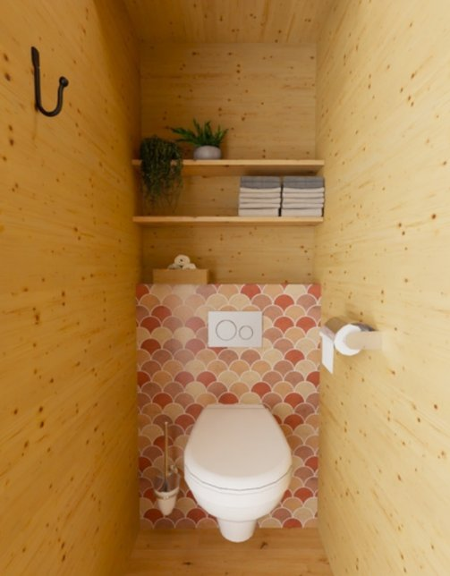
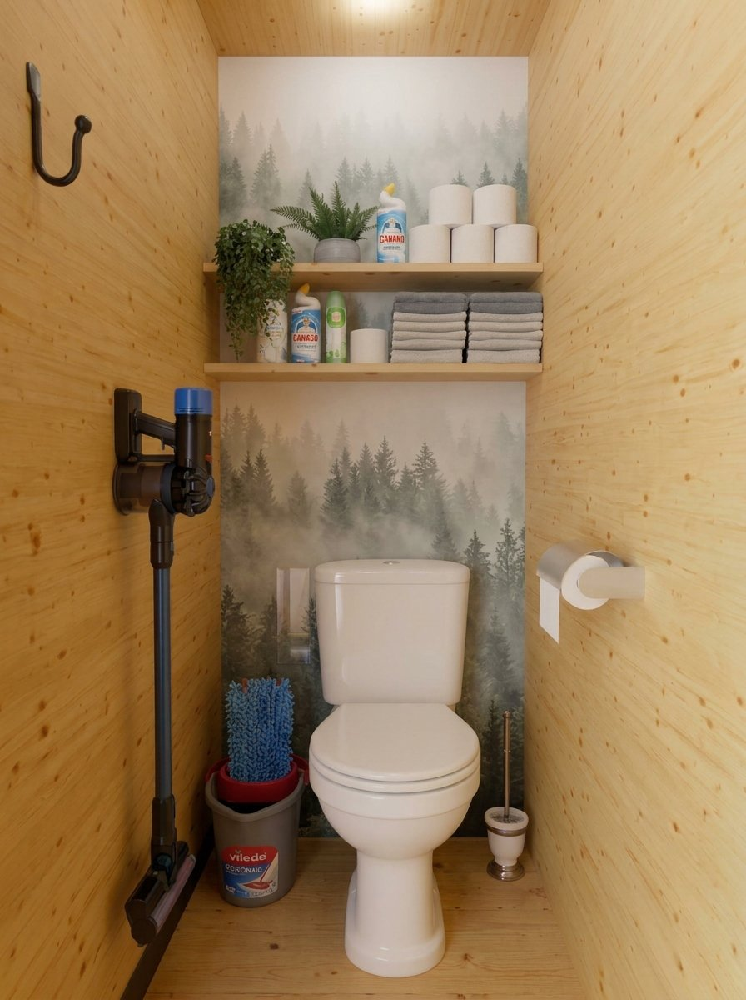
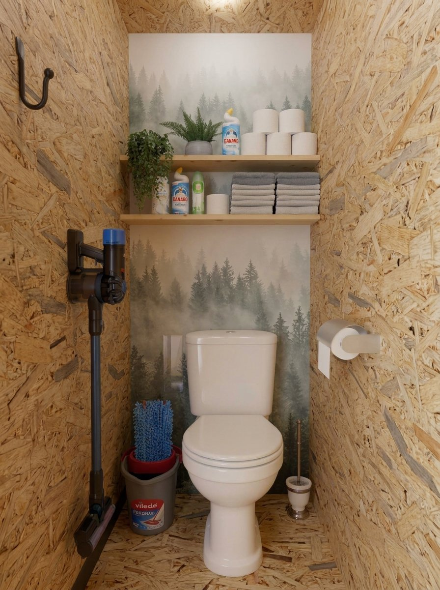
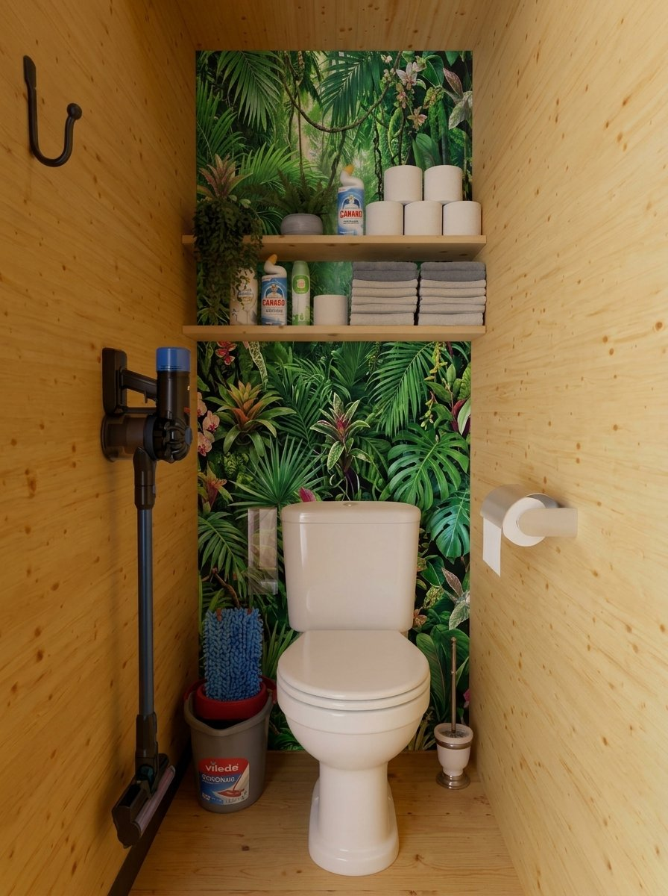

Les toilettes





Pistes d'amélioration
- Parement imitation pierre beige sur le mur du fond, pour casser le bois clair des murs. Produit envisagé : parement imitation pierre beige en béton (boîte de 0,52 m²), 4 boîtes comptées. À valider
- Deux étagères en bois clair au-dessus de la cuvette : papier, serviettes, produits d'entretien et quelques plantes. À valider
- Aspirateur balai sans fil fixé au mur, toujours prêt pour le ménage de fin de séjour. Produit envisagé : aspirateur balai (fiche Amazon). À valider
- Balai plat et seau rangés dans le coin à côté de la cuvette. Produit envisagé : balai Vileda Ultramax (Electro Dépôt). À valider
- Cuvette de WC : produit envisagé : fiche Brico Dépôt (109 €). À valider
- Petits accessoires : crochet noir au mur, porte-papier, brosse. À valider
Budget
| Produit | Quantité | Prix unitaire | Total |
|---|---|---|---|
| Parement imitation pierre beige (boîte de 0,52 m²) | 4 | 20,75 € (Castorama) | 83 € |
| Aspirateur balai sans fil | 1 | 70 € (Amazon) | 70 € |
| Balai Vileda Ultramax | 1 | 22,95 € (Electro Dépôt) | 22,95 € |
| Toilettes (WC) | 1 | 109 € (Brico Dépôt) | 109 € |
| Deux étagères en bois clair | – | 15 à 30 € (estimation) | 15 à 30 € |
| Porte-papier, brosse WC et crochet noir | – | 15 à 30 € (estimation) | 15 à 30 € |
| Poubelle | – | 5 à 15 € (estimation) | 5 à 15 € |
| Support mural de l'aspirateur | – | 5 à 15 € (estimation) | 5 à 15 € |
| Sous-total | 324,95 à 374,95 € | ||